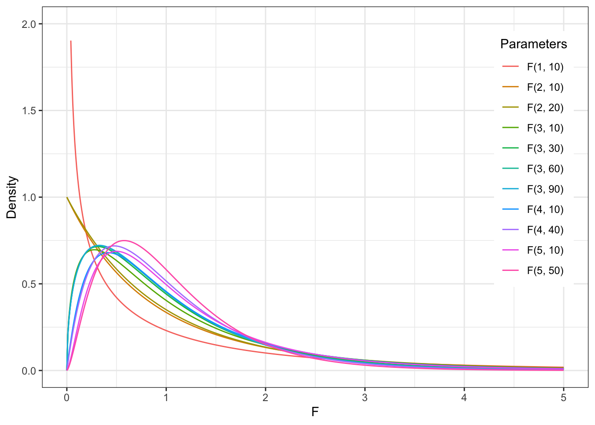
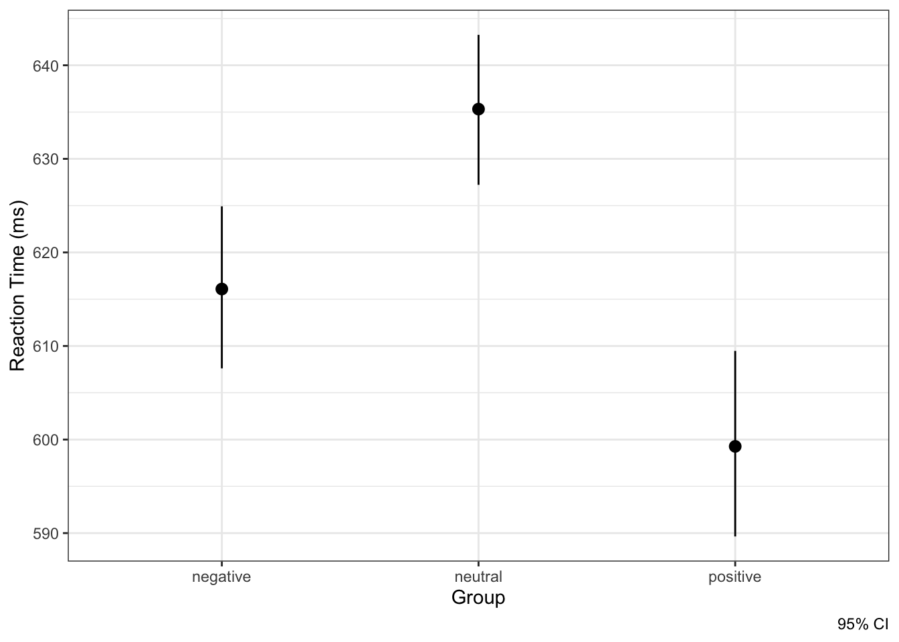
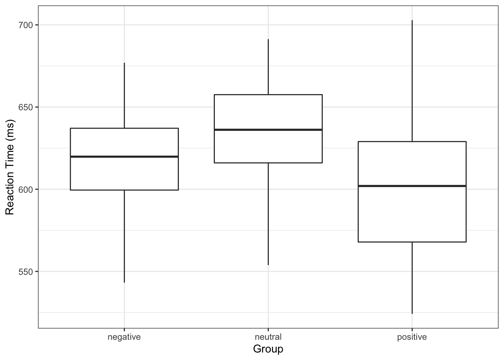
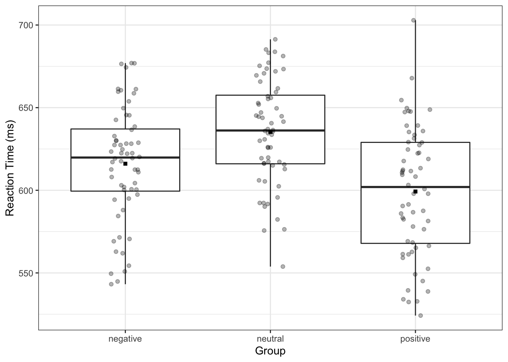
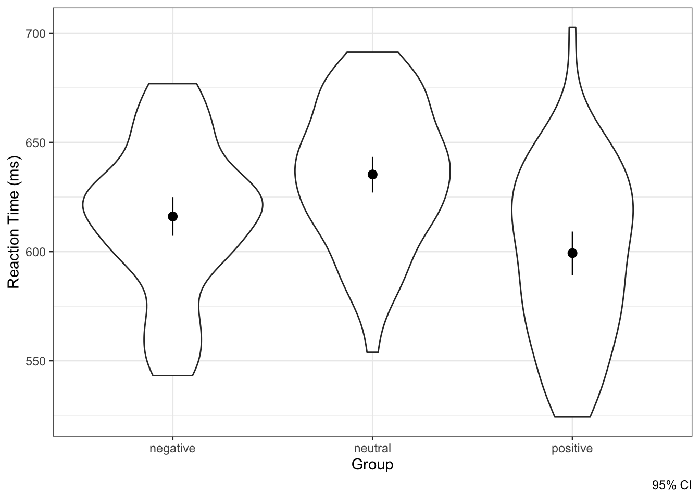

11 Общие линейные модели. Однофакторный дисперсионный анализ
Со связями между категориальными переменными мы познакомились. Со связями между количественными мы тоже — хотя и не до конца — но познакомились. А что делать, если у нас одна количественная переменная, а другая категориальная?
11.1 Э-э-эксперимент
Допустим мы изучаем что-то про эмоции. Нам интересно сравнить скорость распознавания нейтральных и эмоционально окрашенных слов. Мы решили предложить испытуемому задачу лексического решения — предъявляем ему слова и не-слова, а испытуемому необходимо ответить, является ли представленный набор символов словом. Пусть ответ даётся нажатием на клавиши «←», если набор символов является словом, и «→», если таковым не является.
Сколько нам нужно экспериментальных условий? Кажется, что три — нейтральные стимулы, стимулы с положительной валентностью, стимулы с отрицательной валентностью. И пусть у нас три группы испытуемых — каждая группа проходит одно экспериментальное условие. Не-слова будем считать филлерами и не будем анализировать пробы с ними.
Итого,
- ЗП — время реакции
- НП — тип стимула (валентность): три уровня — нейтральные, негативные, позитивные.
Ну, вот быстренько в 2,5 словах описали дизаин. Предположим, что мы все это безобразие корректно провели и собрали некоторые данные. Посмотрим, что в них будет происходить.
11.2 Структура изменчивости данных
Мы говорили, что основные характеристики статистических данных — неопределённость и вариативность. И эта вариативность (изменчивость) имеет определенную структуру.
Мы также говорили, что основная мера вариативности — это дисперсия. Это верно, однако сейчас чуть замедлимся, и сначала поговорим о суммах квадратов. Ну, то же самое, что дисперсия, только на степени пока не делим.
Итак, наши данные выглядят как-то так:
По оси \(x\) наша независимая экспериментальная переменная — категориальная, как можно наблюдать. Видно, что у нас три экспериментальные группы. По оси \(y\) наша зависимая экспериментальная переменная — количественная, как можно наблюдать. Видно, что в каждой группе наблюдений есть какой-то разброс.
Прежде всего, есть общая изменчивость, или общая сумма квадратов (total sum of squares, TSS) которая складывается из [сумм квадратов] отклонений от общего среднего:
\[ \text{TSS} = \sum_{i=1}^n (\bar y - y_i)^2, \, \text{df}_\text{t} = n - 1 \]
Есть факторная (объясненная) изменчивость (explained sum of squares, ESS) — это отклонения внутригрупповых средних от общего среднего:
\[ \text{ESS} = \sum_{j=1}^p (\bar y - \bar y_j)^2, \, \text{df}_\text{e} = p - 1 \]
Факторная она, потому что то, что мы называем в эксперименте независимой переменной, в дисперсионном анализе называется фактором. Объясненная, потому что она объясняется действием фактора (независимой переменной).
И есть какая-то изменчивость, которая остается необъясненной — случайная (остаточная) изменчивость (residual sum of squares, RSS):
\[ \text{RSS} = \sum_{j=1}^p \sum_{i=1}^n (\bar y_j - \bar y_{ij})^2, \, \text{df}_\text{r} = n - p \]
Очевидно, что
\[ \text{TSS} = \text{ESS} + \text{RSS} \]
Не совсем очевидно
Это правда, но нам пока не хватает некоторого сакрального знания, чтобы разобраться во всех деталях полностью. Чуть позже к этом вернемся.11.3 Зачем нужен дисперсионный анализ?
А че мы выяснить-то хотим, собсна? Вернемся к задумке эксперимента — мы хотим узнать, связана1 скорость опознания слова с его эмоциональной окраской. Как эта связь будет выглядеть в данных?
Если связь существует, то это будет выглядеть как-то так:
Обратите внимание, что основной вклад в вариативность данных вносит факторная изменчивость — средние по группам сильно отстают от общего среднего, в то время как наблюдения от своих групповых средних лежат в целом достаточно близко.
Если связи нет, то это будет выглядеть как-то так:
Обратите внимание, что вклад факторной изменчивости в вариативность данных крайне мал — средние по группам очень близки к общему среднего, в то время как отклонения наблюдений от своих групповых средних составляют бо́льшую часть вариативности данных.
То есть, для того, чтобы сделать вывод о том, есть ли связь между фактором и зависимой переменной, нам нужно сопоставить факторную изменчивость и остаточную изменчивость.
Теперь у нас есть все, чтобы поговорить о тестирования статистической значимости фактора. Именно этим и занимается дисперсионный анализ (analysis of variance, ANOVA).
11.4 Тестирование значимости фактора
Поскольку у нас может быть разное количество наблюдений в группах и различное количество групп, лучше сравнивать не саму изменчивость — суммы квадратов — а среднюю изменчивость — средние квадраты. Они вычисляются так:
\[ \text{MS}_\text{t} = \frac{\text{TSS}}{\text{df}_\text{t}} \\ \text{MS}_\text{e} = \frac{\text{ESS}}{\text{df}_\text{e}} \\ \text{MS}_\text{r} = \frac{\text{RSS}}{\text{df}_\text{r}} \]
Ну, первое все узнали — это literally дисперсия, второе и третье тоже на неё похожи, но их принято называть средними квадратами. Ну, ок.
\(\text{MS}_\text{e}\) и \(\text{MS}_\text{r}\) помогают протестировать значимость фактора.
- Если зависимость между фактором и целевой переменной есть, то \(\text{MS}_\text{e} > \text{MS}_\text{r}\).
- Если искомой зависимости нет, то \(\text{MS}_\text{e} \approx \text{MS}_\text{r}\) или даже \(\text{MS}_\text{e} < \text{MS}_\text{r}\).
В терминах статистических гипотез это будет выглядеть так:
\[ H_0: \mu_1 = \mu_2 = \dots = \mu_p \\ H_1: \exists i, j : \mu_i \neq \mu_j \]
Для тестирования этой гипотезы придумали вот такую статистику:
\[ F = \frac{\text{MS}_\text{e}}{\text{MS}_\text{r}} \overset{H_0}{\sim} F(\text{df}_\text{e},\text{df}_\text{r}) \]
11.4.1 Распределение Фишера
Значение F-статистики подчинается F-распределению (распределению Фишера). Его форма зависит от двух значений степеней свободы — \(\text{df}_\text{e},\text{df}_\text{r}\).

Как можно заметить, форма достаточно сильно меняется при увелчении первого числа степеней свободы, и не очень сильно, но все же меняется, с увеличением второго числа степеней свободы.
Не трудно предположить, что для значения F-статистики будет вычисляться p-value, на основании которого будет осуществляться статистический вывод:
- Если p-value \(< \alpha\), то мы получаем значение F-статистики, не характерное для случая, когда нулевая гипотеза верна, что даёт нам основания отклонить нулевую гипотезу об отсутствии различий между группами и принять альтернативную, о том, что хотя бы между двумя какими-либо группами есть различия.
- Если p-value \(> \alpha\), то мы получаем значение F-статистики, характерное для случая, когда нулевая гипотеза верна, что не даёт нам оснований отклонить нулевую гипотезу об отсутствии различий между группами.
11.4.2 Представление результатов дисперсионного анализа
Результаты дисперсионного анализа обычно представляются в виде таблицы:
| Источник изменчивости | SS | df | MS | \(F\) | \(p\) |
|---|---|---|---|---|---|
| Фактор (объяснённая) | \(\text{ESS}\) | \(\text{df}_\text{e}\) | \(\text{MS}_\text{e}\) | \(F(\text{df}_\text{e},\text{df}_\text{r})\) | p-value |
| Случайная (остаточная) | \(\text{RSS}\) | \(\text{df}_\text{r}\) | \(\text{MS}_\text{r}\) |
В реальной жизни оно как-то так работает:
## $ANOVA
## Effect DFn DFd F p p<.05 ges
## 1 name 2 177 15.63676 5.578527e-07 * 0.150156
##
## $`Levene's Test for Homogeneity of Variance`
## DFn DFd SSn SSd F p p<.05
## 1 2 177 1647.479 76502.58 1.905843 0.1517362Тут еще нам автоматом выдали результаты теста Levene на равномерность (гомогенность) дисперсий. Это одно из условий применения дисперсионного анализа.
11.5 Размер эффекта в дисперсионном анализе
Итак, с ошибкой первого рода мы, как обычно, быстро и легко поборолись. Теперь боремся с ошибкой второго рода. Принципиально ничего не меняется — нам нужно понять, как считается размер эффекта, и рассчитать требуемую выборку.
В случае дисперсионного анализа размер эффекта — это доля объясненной фактором дисперсии от всей дисперсии данных. Обозначается эта метрика \(\eta^2\):
\[ \eta^2 = \frac{\text{ESS}}{\text{TSS}} \]
Значения для интерпретации размера эффекта предлагаются такие:
| Значение \(\eta^2\) | Размер эффекта |
|---|---|
| 0.01 | Малый (small) |
| 0.06 | Средний (medium) |
| 0.14 | Большой (large) |
Собственно, эти значения вбиваем в специально обученное ПО — и кайфуем!
11.6 Визуализация результатов дисперсионного анализа
Визуализация результатов в дисперсионном анализе, с одной стороны, достаточно проста. Нам нужно отобразить точечные и интервальные оценки средних в группах, то есть нарисовать errorbar. В качестве интервальной оценки обычно отображается 95% доверительный интервал.
График будет выглядеть примерно так:

Интерпретировать подобные картинки мы уже с вами умеем — если забыли, напоминаю.
Другим вариантом визуализации для дисперсионного анализа, который очень любят за рубежом, являются боксплоты. Вот как-то так:

Я искренне не понимаю, почему они их там так любят, ведь они не отображают ровно ничего, связанного с дисперсионным анализом — вспомните основные элеметы боксплота. Но их любят, их рисуют — ну, ладно. Кто мы такие, чтобы это запрещать.
Конечно, этот график хорош тем, что можно сделать что-то такое — иногда это может быть полезно:

Но можно изобразить комбо! Оно называется violin plot:

С одной стороны, он нам отобразит распределения зависимой переменной по группам, с другой стороны, мы можем дополнительно отобразить средние с доверительными интервалами, как сделано на графике выше. Ну, просто невероятно!
11.7 Условия применения дисперсионного анализа
Как вы уже могли догадаться, дисперсионный анализ относиться к группе параметрических статистических методов, поэтому выдвигается ряд требований к данным, на которых проводится такой анализ.
- Количественная непрерывная зависимая переменная
- Независимые между собой выборки
- А если зависимые, то надо это учесть в модели ановы
- Нормальное распределение признака в генеральных совокупностях, из которых извлечены выборки
- Равенство (гомогенность) дисперсий изучаемого признака в генеральных совокупностях из которых извлечены выборки
- Проверяется с помощью теста Левина
- Независимые наблюдения в каждой из выборок
11.7.1 Гомогенность дисперсий
Гомогенность дисперсии — важно допущение. Поясним за него.
Как уже отмечено выше, модель дисперсионного анализа предполагает, что в генеральный совокупностях, из которых мы извлекли наши выборки, дисперсии изучаемого признака равны. Однако в силу неопределенности и вариативности это может быть и не так, поэтому нужно протестировать гипотезу о равенстве дисперсий в группах. Алгоритм статистического вывода нам изместен, а в детали этого попутного теста мы, пожалуй, погружаться не будем. Гипотеза о равенстве дисперсия проверяется с помощью теста Левина (Левена / Левиня / и др., Leven’s test, см. выше.
Соответственно, мы хотим, чтобы его результаты не были статистически значимы, так как в этом случае мы не можем отклонить гипотезу о том, что дисперсии гомогенны. Если же результаты теста статистически значимы, то использование дисперсионного анализа не то чтобы хорошо на имеющихся данных.
11.8 Виды эффектов в дисперсионном анализе
Тот вид дисперсионного анализа, который мы рассмотрели — это такой стандартный базовый дисперсионный анализ. Однако давайте пристально посмотрим на один момент: «пусть у нас три группы испытуемых — каждая группа проходит одно экспериментальное условие». То есть каждой из экспериментальных групп у нас уникальные испытуемые. Такой эффект фактора в дисперсионном анализе называется between-subject effect, а в терминах эксперименталки это будут независимые выборки.
Но в жизни, как мы знаем, такой экспериментальный дизайн вряд ли адекватен. Скорее, мы бы сделали так, что один испытуемый проходит все три условия — и нейтральное, и негативной, и позитивное. Да еще и в случайном порядке. У нас получится, что от каждого испытуемого мы получаем три измерения — с нейтрального, негативного и позитивного условия. Такой эффект фактора в дисперсионном анализе называется within-subject effect, сама ANOVA будет дисперсионным анализом с повторными измерениями, а выборки наблюдений буду зависимыми.
Вообще-то так как у нас эксперимент, мы можем здесь говорить и о влиянии, которое мы контролируем с помощью экспериментального дизайна. Но будем осторожны и продолжим говорить о связи.↩︎